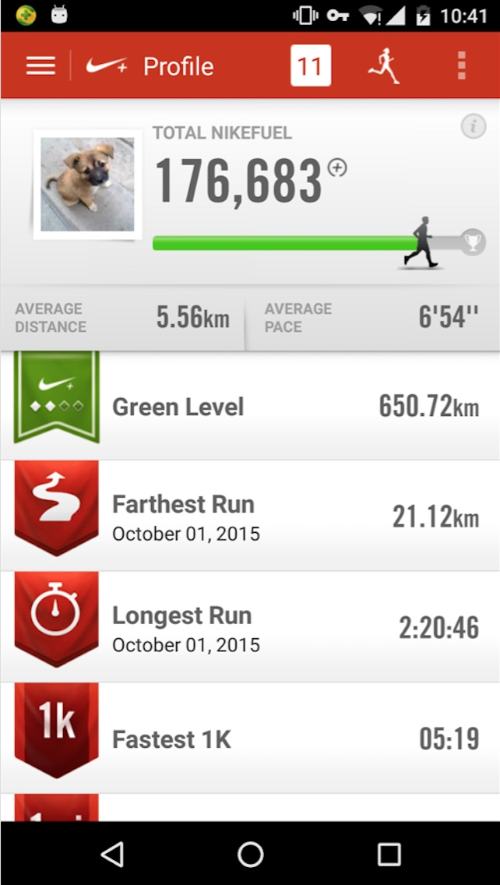

2015小结
I
2015小结
2015算是自己人生中又一个分水岭，过了除夕才是过完中国的一年，赶在除夕之前整理下自己的2015。
工作
在学校做硬件 -> 实习做驱动 -> 离开了校园 -> 迈入职场-> Android APP 开发
这一年在技术上的成长自己还是很满意的
流水账
2015年初，从美团实习完回学校之后就发觉对 Android 有浓厚的兴趣，考虑到后续工作可能接触到 Android 相关的工作，2015年出开始自学 Java 和 Android，抱着『第一行代码』走了一遍，对 Android 有了初步的认识。之后忙毕业一直到了6月。
6月正式入职之后，最初是被分配在了 MTK 平台那边，并不和 Android 相关，主动找了桥哥和栋哥商量，调到了 Android 开发，美团这一点还是挺人性的，尊重员工的意愿。还好有申燊同学带着，一步一步开始了 Android 之旅。
第一个项目是做的小美接单，当样机拼装完成，成功打印的那一刻还是挺有成就感的。
之后部门变动，有两个选择，1. 和以前的同事一起去望京 SOHO 继续在硬件组做 Android 相关的开发。 2. 留在外卖，去B端开发 。 对于一个处女座来说真的很难抉择。感谢少鹏哥和国良哥此时给我的建议,最终留在了外卖，目前看来这对于希望在 Android 方向上发展无疑是个更好的决定
在来 B端之前，基本上是和申燊两人在摸黑开发，代码毫无规范可言，写完之后一堆 bug，两个应届生没有人指导。来了 B 端这边才见到了正规军。ヾ(｡｀Д´｡) 原来 git 是这么耍的！原来编程要考虑这么多细节！原来代码还需要 review！原来产品发布还有个叫灰度的过程！
感谢广伟哥的指导，在 Android 的路上逐渐步入正轨
.....
新技能 get
经过被 git 坑过几次之后，静下来把 git 好好整了一遍，发现 git 真是神器啊。有了 git 就不会出现这样的情况了
Android 基础知识。阅读了几本入门书籍，磕磕盼盼的看完了官方文档，阅读了大牛的博客，Android 的基本知识点大部分都过了一遍
java 基础知识。最开始开始把 java 当 c 来写，没有建立起面向对象的编程思想。直到阅读了『first head 设计模式』，读完之后感慨，原来 Java 是这么玩的，我以前写的是shi么？？
设计模式 。其实我之前是拒绝的，但是现在对此着了魔似得。设计模式确实对项目的整体结构，和之后的扩展有很大的好处，把常用的模式全部阅读了一遍，也在项目中用到了几个。准备后续将知识点继续总结一遍
Android 开源框架 volley 、 eventbus、Gson... 在使用阶段，未对项目源码进一步分析
**自定义view ** 一直觉得自定义 view 很神奇，但是项目中却一直没有机会实战用到，自己写了几个自定义view，并在后期的项目中重构了 FlowLayout，初步了掌握了自定义 view
Android 性能优化
- 内存：get ，整理了一篇博文，目前最满意的一篇博文
- 电量：no
- view：no
java 高级用法
- 注解。 3.5版 重构数据库中用到了注解，很神奇的玩意，新技能 get
- 反射 当一些系统 framework 接口没有暴露出来的时候，可以使用反射，百试不爽，新技能 get
Android 源码阅读。阅读了view 事件传递 和 message 、handler 的源码，阅读的过程中还是比较吃力的，需要借助一些大牛的博客来阅读
发现的不足
- 光看书看博文是效果不大的，很容易忘记，没有融入到自己的的知识体系中。要多实践多实践多实践、把看过的东西运行在项目中，项目中用不到的自己最好写个 demo，并整理到 wiki，方便下次快速拾起
- 切勿眼高手低，觉得挺简单的事情，做起来发现和想象并不是一回事
- 切勿吃着碗里的看着锅里的，想学的太多，囫囵吞枣，什么都看了一圈，到头来发现什么都没学会，一定要沉下心来
- 之前学习整理过的知识点，长时间不用也会忘记。定期对整理过的知识点复习
- 从6月到现在，学习曲线越来越缓。从最开始每天都觉得可以学到很多很多，到现在需要自己主动去发现才能get 到新技能
- 阅读了官方文档之后才发现在国内的一些博客中会有一些错误，尽量阅读官方文档，和国内外大牛的博客
- 总结能力不够。 写出来的东西总不能把想法有条理性的全部表达出来
展望
- 学习过的知识点全部做记录整理，并定期对已学习的知识点回顾，吸收进自己的知识体系
- Android 性能优化的学习
- java 的后续学习
- Android 属性动画、进程间通信、四大组件源码、view 源码的学习
- 设计模式的学习
- 算法
- React Native 探索
- MVP MVVC 学习
读书
2015年大部分书籍都是专业相关的 ，猿类的气息太浓厚， ╮(╯▽╰)╭ 啥时候能提高一下文艺范
第一行代码
推荐指数 ★★★★
郭林大神的良心之作，作为我的第一本 Android 启蒙教材，写的很详细，完全从一个初级小白的视角切入。
Java从入门到精通
推荐指数 ★★
快速的翻了一遍，介绍的是 java 的基本知识点。例子比较详细，但是都讲的不深
Thinking in java
推荐指数 ★★★★★
买这本书的时候比较早，觉得难懂，觉得每一节都有不明白的点，而且内容太多。但是12月再回头看这一本书的时候却发现了很多惊喜点。但是里面有很多内容并不用得上，个人觉得这本书更适合作为一个工具书，遇到不明白的点再回去查询。纯啃完这本书难度还是很大的
clean code
推荐指数 ★★★
书本身是不错的，翻译实在是呵呵哒了，在阅读这本书之前，脑子里是没有什么代码规范可言的，想怎么写怎么写。相比于这本书我更推荐下面这本
重构:改善既有代码的设计
推荐指数 ★★★★★
未读完。神作，现在的 IDE 已经可以很好的辅助重构了，现在我们所需要做的就是，具体只需要了解什么样的 code 是 bad smell，以及如何把这一坨代码重构好。
Head First 设计模式
推荐指数 ★★★★★
作为我的面向对象编程思想的启蒙读物，一边读一遍感叹，原来 java 是这么玩的，之前一直是那写 C 的那些思想在写 java。面向接口编程、对扩展开放对修改关闭、依赖抽象不依赖具体等等面向对象的思想已深入我心
android开发艺术探索
未读完。良心大作。作为 Android 的进阶读物，作者介绍的全是开发过程中遇到的干货，并从源码的角度来剖析问题。16年会细啃这本书
穷查理宝典：查理·芒格的智慧箴言录

投资要素：独立、谦虚、分析、配置、耐心、改变、专注..
不仅仅是关于投资的一本书，改变了我的价值观和思维方式，值得读第二遍
时间的朋友
罗振宇在2015年底，在水立方进行了一次长达4小时的演讲，拨开迷雾，挖掘表象之后的逻辑。互联网 、资本寒冬、创业、微信、淘宝、妖股....感觉给我打开了一扇窗，重新认识周围的世界
理财
私密
爱情？
汪！汪！汪！
虽然依旧单身，心态却和以前不一样
- 学会了独处。以前一个人总会觉得无聊、寂寞。现在却很享受一个人的时间，一个人可以看书、可以看电影、可以跑步。完全没有必要因为一个人而孤独寂寞。
- 知道了自己喜欢的类型
- 心态 好多同学都结婚了，有的娃都打酱油了，曾经有一段时间是比较着急的。现在看待这事很淡然。
- 泡妞技能点已清空，伪学霸技能点加满
健身

从2015年6月开始跑步，已经跑了有7个月了，第一次跑步练1km 都没跑下来，到现在能一口气跑半马了。一开始是一想到改跑步了浑身不舒服，现在是几天没跑步了浑身不舒服。
跑步之后的改变
- 身体。肚子前的一小坨肉不见了，身体变得有轮廓了。心肺功能比以前强太多，跑上5km 基本都不怎么喘气。从去年6月跑步都现在没生病过
- 饮食。以前从来不会注重吃的健康不健康，只分好吃不好吃。自从跑步之后，无意识的规范了自己的饮食健康，油炸食品和碳酸类音量基本不沾了。每天早点都吃的很丰盛。
- 自信。感觉比以前自信了
- 心情。每次跑完都特别 high，再多的烦恼没有跑10k 不能解决的
- 意志力。意志力得到提升。
展望
- 马甲线已显露，but 并不明显，2016希望身材能练好一点
- 完成人生第一个马拉松
- 跑量到1500km（够北京回家的路了）
Game
炉石上了前300，希望16年有机会去黄金联赛转转
电影
作为一个不怎么资深的伪影迷，15年看了约30到40部电影，不懂专业的电影姿势，仅从一个普通观影者的角度谈谈15年看过的那些好电影。
2015年是国产良心片井喷的一年，14年之前，很少去影院看国产电影
西游记之大圣归来
西游记题材的电影、继星爷的『大话西游』之后又一步成功的电影。良心大作啊 ，看到了国产动画的希望。
侏罗纪世界
作为『侏罗纪公园』的忠粉。虽然故事中规中矩，丝毫不影响在我心目中的地位
老炮儿
感触最深的一个镜头是冯导和儿子上出租车后，带上墨镜一个人默默的流泪。
看完电影一直有两个疑问 1. 六爷的儿子回来后，按照六爷的脾气为啥没有去应岔架 2. 六爷和儿子关系恢复的有点太突然
原来电影有一堆片段被删节了，万恶的广电总局
http://www.bilibili.com/video/av3504936/
看完这些删节片段 ，才是完整的『老炮儿』
师傅

我就是喜欢认真的电影！认真的台词，认真的格斗。
好久没看过这么好的动作片了
超能陆战队
wow ~ 大白
烈日灼心
邓超老师的演技让我折服
火星救援
不错的科幻片，但是依然没有撼动『星际穿越』no1的地位
心迷宫
乡会玩系列。小成本的小众电影，但是非常值得一看，剧情紧凑，故事情节环环相扣 ，多角度 穿插式的叙事情节，最后带你一步步抽丝剥茧带你找到故事真相， 只有中国能拍出这样的悬疑片
博客
15年用 hexo 搭建了自己的博客，中间断断续续的记录了一些学习的知识点，很零碎，希望2016年能保持记录总结的习惯
2015年剁手的那些超值单品
喜闻乐见的安利环节，细数15年剁手的那些超值单品
电动牙刷（飞利浦（Philips） HX6730/02）
没的说，懒人必备啊，像我这样天天不认真刷牙的买了这个就是买对了，之后给家里也买了一个。
kindle paperwhite3
6寸 触摸屏，300ppi，背光
阅读利器，除了专业书籍，其他所有的长篇阅读都放在 kindle 中，包括一些微信公众号的长篇文章，也全推送都 kindle
MacBook
公司发的，颠覆了我对电脑的认识，再也还不回 windows，彻底沦为苹果脑残粉
MWeb
Markdown 深度使用者，所有的笔记，todo 都是用 Markdown 记录，而MWeb是我迄今为止用过最好用的软件
K21跑鞋
对于一个跑步爱好者来说，一双好的跑鞋是必不可少的，以前要是花800买双鞋我是打死也不愿意的，当我穿上之后，一切都觉得很值~